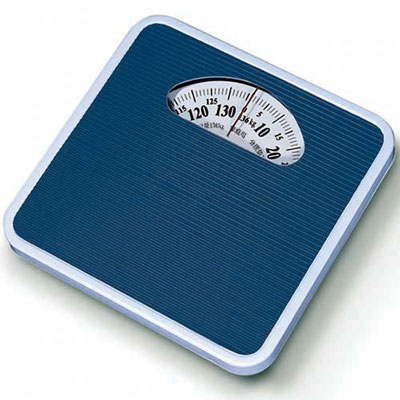

<ion-header [translucent]="true">
  <ion-toolbar color="success" >

    <ion-title >
      App BMI
      </ion-title>
  </ion-toolbar>
</ion-header>

<ion-content class="ion-padding" [fullscreen]="true" >
  <ion-header collapse="condense">
    <ion-toolbar>
      <ion-title size="large">Blank</ion-title>
    </ion-toolbar>
  </ion-header>

    <div class="ion-text-center">
  </div>
  <ion-card color="primary" class="ion-padding">

      <ion-item>
  <ion-input label="กรอกนํ้าหนัก" color="light" placeholder="kg" [(ngModel)]="weight"></ion-input>
      </ion-item>
      <ion-item>
  <ion-input label="กรอกส่่วนสูง" color="light"placeholder="cm" [(ngModel)]="hight" ></ion-input>
    </ion-item><br>
  <ion-button color="warning" size="large" expand="block" shape="round" (click)="oncal()">คํานวณ</ion-button>
  </ion-card >
  <br>
  <ion-card color="danger" class="ion-text-center">
  <ion-card-header>
    <ion-card-subtitle>
      ผลลัพธ์
    </ion-card-subtitle>
    <ion-card-title>
  {{result | number : '1.0-2'}}
  </ion-card-title>
  </ion-card-header>
</ion-card>
<ion-card color="success" class="ion-text-center">
  <ion-card-header>
<ion-card-subtitle>
  แปรผล
</ion-card-subtitle>
<ion-card-title>
  {{result_text}}
</ion-card-title>
</ion-card-header>
</ion-card>
</ion-content>

